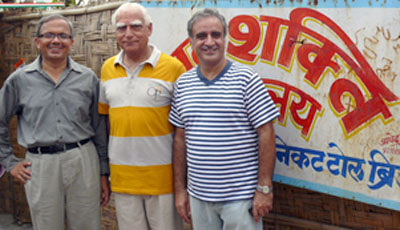

A ray of hope for lesser privileged children
Core Steering Group involved in day to day activities of the Program
Late Shanti Narayan, former Principal of Hans Raj College and Dean of Colleges, University of Delhi devoted his life to the cause of furthering education to all levels of society. In order to perpetuate his memory and to further the causes which were dear to his heart, his family members and close associates have set up this Trust with the primary objective of furthering the spread of education to the economically weaker and backward section of the society. To this end, Shanti Narayan Memorial Trust is supporting our project through requisite legal framework and managing the donations on our behalf.
sanjeeva@ashwaniassociates.in
+91 9811080354
Our Founder Members and Mentors collaboratively work to help GSV Students in all aspects.

Harish Malhotra is a master's degree holder in Defence and National Security Studies with 37 years of Planning and Operations experience in the Indian Navy with specialization in the fields of Logistics, HRD and Training. Since retirement as Rear Admiral in 1991, he has been keenly involved in community development and environmental work with NGOs and citizen’s voluntary organizations. A distinguished personality with a keen insight into the changing socio-political, human development and environmental needs of the community, with a determined team building and resource mobilizing ability.